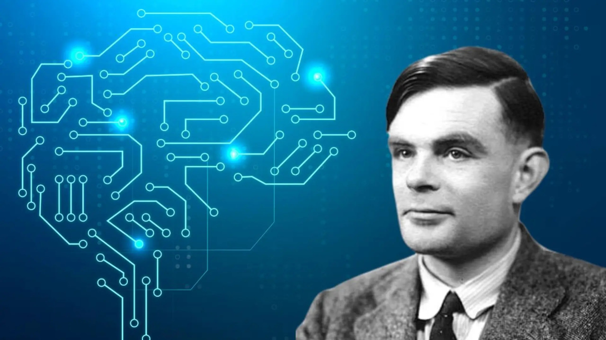
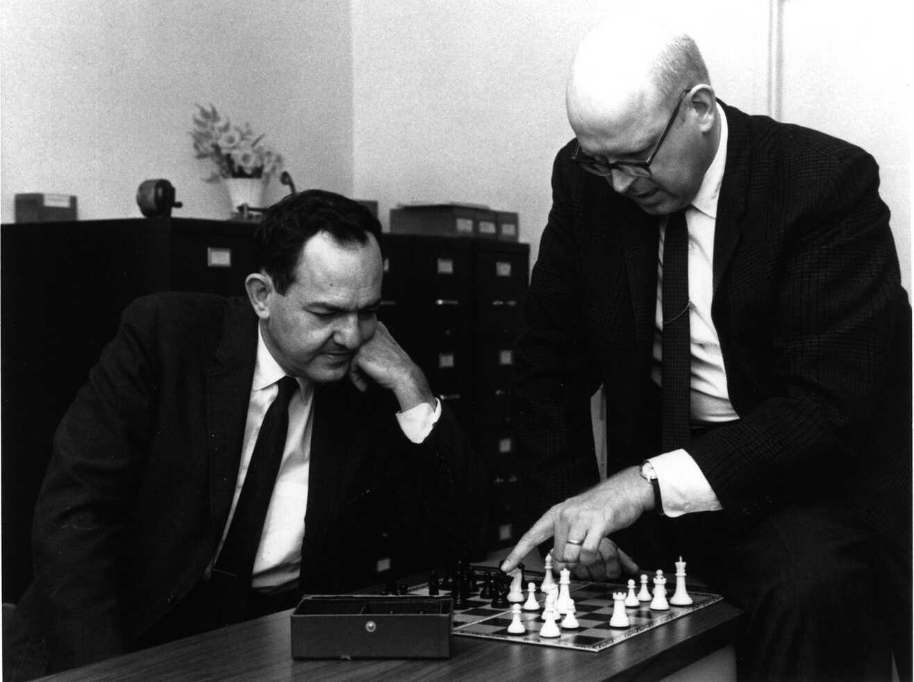

La IA comenzó a tomar forma en la década de 1940 con trabajos de matemáticos como Alan Turing, quien propuso la prueba de Turing para evaluar la inteligencia de una máquina. En 1956, se llevó a cabo la conferencia de Dartmouth, donde se acuñó el término "inteligencia artificial".
Durante las décadas de 1950 y 1960, se desarrollaron los primeros programas de IA, como el juego de ajedrez y el "Logic Theorist", que resolvía teoremas matemáticos.
A pesar de los avances, la falta de progreso y expectativas poco realistas llevaron a periodos de desilusión conocidos como "inviernos de la IA", donde se redujeron los fondos y el interés.
En los años 80, la IA resurgió con el desarrollo de sistemas expertos que podían tomar decisiones en áreas específicas, como la medicina y la ingeniería.
Con el aumento de la potencia de computación y la disponibilidad de grandes conjuntos de datos, el aprendizaje automático y, en particular, el aprendizaje profundo han revolucionado la IA. Hoy en día, se aplica en diversas áreas, desde asistentes virtuales hasta vehículos autónomos.
La IA continúa evolucionando, con investigaciones en áreas como la ética y la interpretación de los modelos, y su impacto en la sociedad sigue siendo un tema de debate activo.